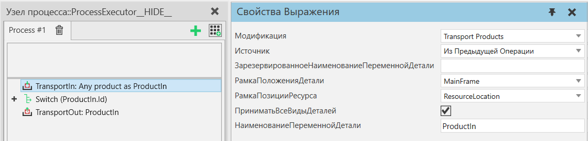

Транспорт В |
|
Описание Оператор ТранспортВ позволяет вам транспортировать один или несколько экземпляров продукта в процесс. Оператор может работать в одном из двух режимов: в Transport Products транспортируемый продукт(ы) будет сохранен непосредственно в выходной переменной, в то время как в режиме Process an Assembly транспортируемый продукт (продукты) будет добавлен к экземпляру сборки, который затем будет сохранен в выходной переменной.  Дополнительная информация Если Источник "Из Предыдущей Операции", для успешной перевозки требуется: 1. продукт(ы) указанного типа(ов), которые должны быть доступны. 2. для этих продуктов, этот процесс должен быть следующим шагом в их шагах процесса. 3. чтобы существовала действующая транспортная ссылка от процесса-отправителя к этому процессу. 4. наличие любых ресурсов, необходимых для транспортировки. В начале инструкция инициирует транспортировку, если Источник установлен как Из Предыдущей Операции. Затем инструкция будет заблокирована и будет ждать, пока экземпляры продукта не прибудут в контейнер, к датчику пути или в сборку. Продукты могут поступать через транспортную систему, через потоковые интерфейсы в КонтейнерКомпонента транспортного узла или по пути, если транспортный узел подключен к этому пути в качестве датчика. Оператор ТранспортВ обычно сочетается с оператором ТранспортИз в процессе отправки. Убедитесь, что свойство Место назначения оператора ТранспортИз совместимо со свойством Источник оператора ТранспортВ. Также можно использовать оператор ТранспортВ без соответствующего оператора ТранспортИз, обычно в режиме Источника Из Контейнера Компонента. Этот оператор содержит несколько свойств, позволяющих пользователю выбрать, какие типы продуктов будут приняты в этот процесс. См. ПриниматьВсеВидыДеталей, ПринятыеГруппыПроцессов и ПринятыеВидыДеталей. Обратите внимание, что эти параметры фильтрации продуктов не используются при объединении этого оператора с оператором ЗарезервироватьПродукт или в режиме обработки сборки. Транспортировка сборок Режим Transport Products: Сборку можно транспортировать как один тип продукта, как и любой другой продукт. Затем этот тип сборки можно прочитать, например, с помощью оператора Получить сборку.
Режим Process an Assembly: Сборка также может приниматься «по частям». Оператор Получить Сборку обычно используется заранее, чтобы выбрать, какие этапы сборки должны быть заполнены и переданы оператору ТранспортВ через свойство НаименованиеПеременнойПорядкаСборки. Шаги сборки заполняются последовательно, в ширину. Внутри шага свойство OrderIndex слотов сборки определяет порядок их заполнения. Слоты с одинаковым значением OrderIndex будут заполняться одновременно. Параметры фильтрации продуктов в каждом слоте учитываются, чтобы определить, какие типы продуктов могут быть приняты в каждый слот. Любые предоставленные предварительно зарезервированные продукты рассматриваются перед размещением запросов на новые продукты. Чтобы заполнить слот сборки, этот оператор разместит запрос на один продукт. Однако к поступающему продукту могут быть прикреплены дочерние продукты, т. е. это может быть набор продуктов. Если входящий продукт не является экземпляром сборки, этот оператор попытается использовать эти дочерние продукты для заполнения других слотов в сборке. Любые дочерние продукты, которые не используются для заполнения других слотов, останутся прикрепленными к входящему продукту, который помещается в слот, для которого он был запрошен. Подобно оператору Создать, ТранспортВ также может использоваться для создания наборов продуктов. Это происходит, когда в операторе Получить сборку не выбран первый шаг сборки. В отличие от оператора Создать, ТранспортВ будет обрабатывать шаги сборки в том же порядке, как если бы был выбран первый шаг, поэтому TransportIn может одновременно создавать несколько наборов продуктов. Свойства
|